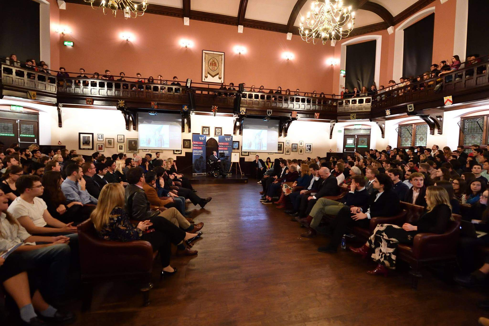

African Champions
← BackEvent Overview
During the month of November, the delegates of Oratory League were chosen just to participate in the Cambridge School Debate - Africa Regional Round. This was done on the same day of the competition, merely a few hours before it begins. They had to adapt very quick as they had never participated in any British Parliamentary debate, so the format was quite different.
The Competition was held on Zoom, with multiple African countries participating. It was regional round selection, and by the end of the Championship, Oratory League being represented by Leatile King Baaitse and Gracious Theresa Siolwe, won the competition being ranked 1st, with Ms. Siolwe being ranked the best debater and Mr. Baaitse as the 5th runner-up. They team has is now set to represent the continent of Africa at the Cambridge Union in the United Kingdom to battle for best international debaters.

Back to Home
Return to the homepage to explore more about the Oratory League and its events.
Go Back to Home